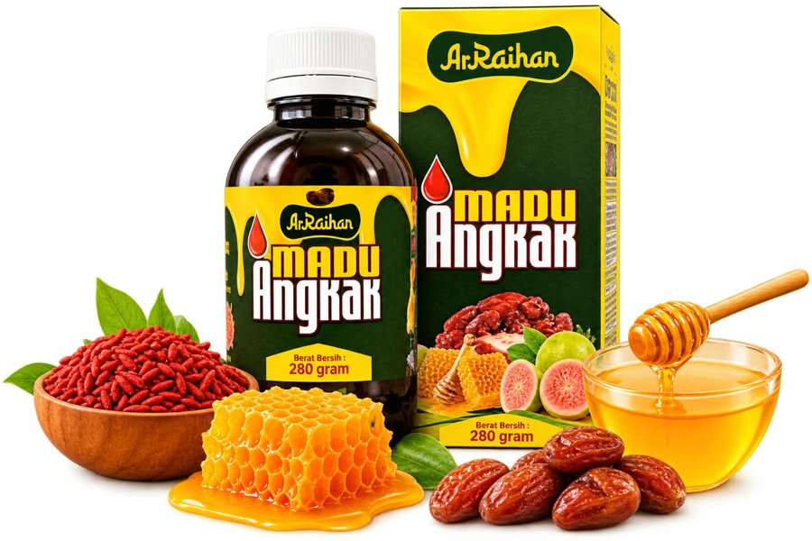

Madu AngkakPlus
Madu angkak sering digunakan sebagai suplemen pendamping untuk membantu pemulihan pasien demam berdarah (DBD) dan tifus.
Pesan via WhatsApp Lihat Manfaat
Klaim Khasiat & Potensi Manfaat
Berbagai klaim khasiat dan potensi manfaat madu angkak bagi kesehatan
Membantu Pemulihan DBD dan Tipes
Menaikkan trombosit: madu angkak populer dikonsumsi saat jumlah keping darah (trombosit) menurun drastis akibat DBD atau tifus.
Menurunkan Kolesterol dan Menjaga Jantung
Kandungan monacolin K: angkak (beras ragi merah) mengandung senyawa aktif monacolin K yang mirip dengan obat penurun kolesterol golongan statin.
Manfaat: membantu menekan produksi kolesterol jahat (LDL) serta trigliserida, dan melancarkan sirkulasi darah.
Menjaga Stamina dan Imunitas Tubuh
Sumber energi: kandungan gula alami pada madu dan sari kurma membantu memulihkan tenaga.
Antioksidan: madu kaya antioksidan dan zat antibakteri yang membantu tubuh melawan infeksi ringan serta menjaga kebugaran.
Meredakan Masalah Pencernaan
Sifat antiinflamasi: kombinasi bahan di dalam madu angkak dipercaya dapat membantu meredakan radang usus, gejala maag, serta menjaga keseimbangan flora usus.
Sehat Alami dengan Madu Angkak
Hubungi kami untuk pemesanan dan informasi produk.
📞 08977202111 www.arraihan.com